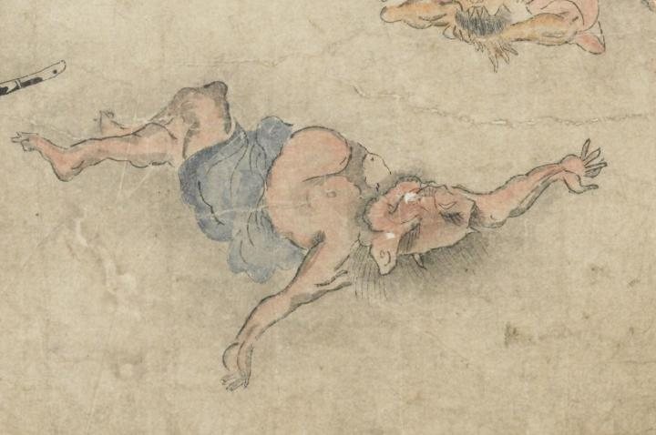

赤い鬼。頭部に2本角を生やし、後頭部から髪を生やしている。尖った耳が、額の脇についている。口ひげと顎ひげを生やしている。青い着物は腰に纏わりつき、膨らんだ腹部はむき出しになっている。両腕を開いて仰向きに倒れ、白目をむいている。
著作者：坂本弥一郎徳定／出典：親書誌：U426_nichibunken_0080：伊吹山酒呑童子絵巻；イブキヤマシュテンドウジエマキ／日付：2007／資源識別子：U426_nichibunken_0080_0009_0004
Copyright (c)2010- International Research Center for Japanese Studies, Kyoto, Japan. All rights reserved.